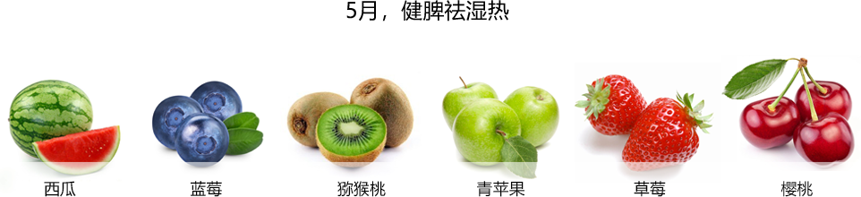
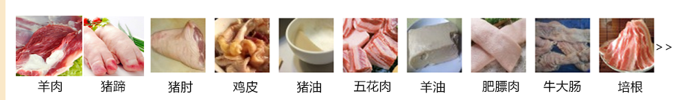

你好，欢迎来到美食美刻网！
当前位置：首页>饮食健康>清热解火
清心去火吃什么好?
上火是日常中十分常见的一种症状及体征，如面红耳赤，烟燥声嘶，肺肿四起，红肿热痛，口腔糜烂，牙疼肿胀，烦躁是main，鼻口出血，舌红苔黄，尿少便干，发热出汗等。上火分为两类症候：实火和虚火。
适宜食材
禁忌食材
1 忌食温热性的食物 2 忌食辛辣性的食物 3 忌抽烟，喝酒
中国最大的菜谱库800000篇
每月，用户访问数量20000000次
每年，菜谱被浏览量3600000000次
现在，这些数字还在不断的增长着，欢迎您来一起使用美食美刻！